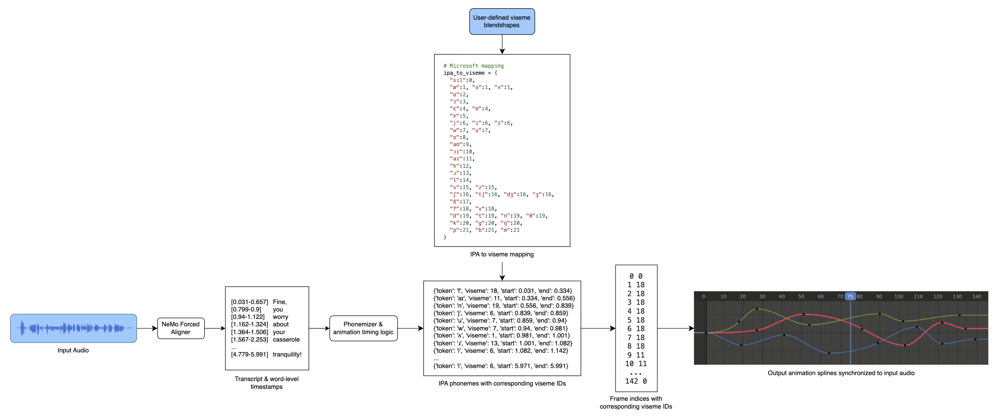

Auto Lip Sync Blender Add-on (WIP)
Python / Blender API / NeMo Forced Aligner / Phonemizer / Google Colab / Facial Rigging
In a typical 3D animation workflow, characters have a library of facial poses that represent mouth shapes. To animate dialogue, animators manually place and adjust these shapes over time to match the audio. While this allows full creative control, it is also a repetitive and time-consuming process.
For my senior capstone project, I'm developing an automatic lip sync Blender add-on that generates a first pass of lip sync animation from input audio and a phoneme-to-blendshape mapping. The goal of this project is to accelerate the blocking stage of lip sync by providing a procedural starting point for animators to refine rather than build entirely from scratch.
At a high level, the system converts audio into timestamped phonemes and maps those phonemes to viseme blendshapes, which are then used to generate mouth animation keyframes in Blender.

Here's a compilation of test output that shows the phoneme-to-viseme mapping working on 15+ English audio clips. While debugging, I used 2D viseme images instead of 3D blendshapes to verify timing and sequence accuracy.
The final deliverable for this project is a functional Blender add-on that allows users to select and process an audio file (up to 1+ hour duration or as user hardware allows), define phoneme-to-blendshape mappings, and generate lip sync keyframes for a character rig. At this stage, the add-on is being fine-tuned to create reasonable keyframes for American English audio as opposed to generalizing for other languages.